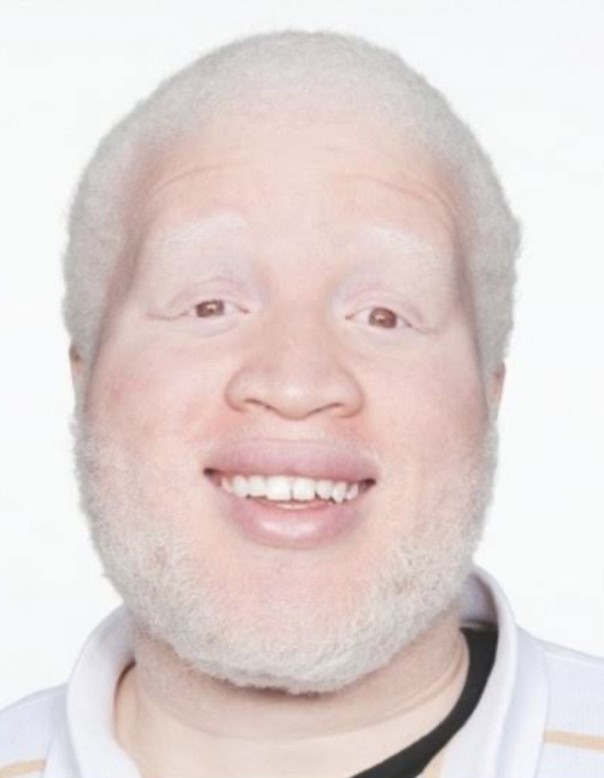
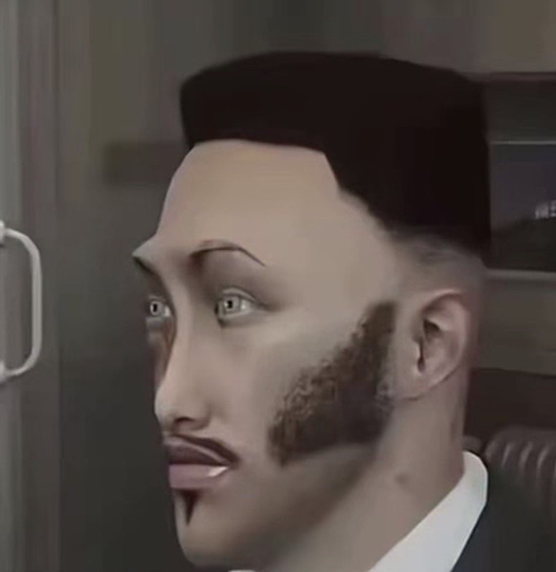

01
Coordonnateur
Décompose la mission et orchestre le flux.
Observatoire SOC
Six agents CrewAI enchaînent outils et LLM local pour classer, corréler et prioriser des journaux synthétiques ACME-LAB.
Pipeline
Chaque étape a un rôle clair. Les outils font le travail déterministe ; le LLM local synthétise et décide.
01
Décompose la mission et orchestre le flux.
02
Charge alertes + inventaire via outils.
03
Type, gravité, faux positifs.
04
Campagnes et chaînes d’attaque.

05
Score de risque + vérification.

06
Brief final P1 / P2 / P3.
Sur Vercel : site de présentation (cette page + slides). Le dashboard Streamlit et le LLM local restent sur une machine avec GPU — Vercel ne peut pas les héberger.
Exécution locale
Python 3.12, llama-server, et un GGUF (~12 Go). GPU NVIDIA recommandée.
uv pip install -r requirements.txt
bash scripts/start_llm.sh
python -m scripts.run_batch --per-scenario 4 --live 1
streamlit run dashboard/app.py